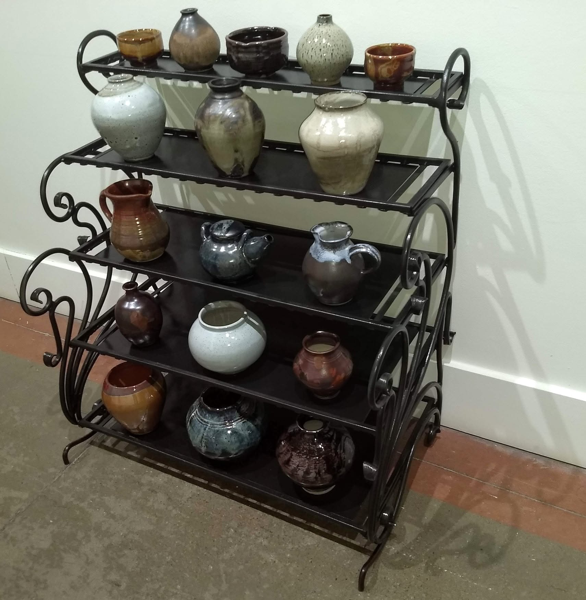

Eric Shotwell - Artist Blacksmith
July 2026 Studio Update

Reflections
This month in the studio, the forge is hot and and the kiln is hotter. There is a particular rhythm to July—the long days provide enough light to keep working well into the evening. Hope your summer is going well!
Studio Notes
Featured: The Forged Iron Stand

I built this iron stand with hand-thrown pottery in mind, focusing equally on structural strength and visual beauty. By incorporating elegant scrolls, the metalwork mirrors and complements the natural, organic shapes of the clay.
Finding the right balance between the overall form and the individual forged elements was challenging.
The final structure beautifully demonstrates how traditional blacksmithing techniques seamlessly align with modern design.
Ultimately, this balance proves that preparation and thoughtful planning are just as vital to the final design quality as the physical crafting itself.
Workbench Preview
Work in progress
Sneak peek: I am currently preparing my kiln for the next firing. My pieces are taking shape, but I'm looking forward to the big reveal next month. Kiln firing is always an exciting time in the studio!
Enjoy these studio notes? Join the monthly mailing list for early access and studio previews.